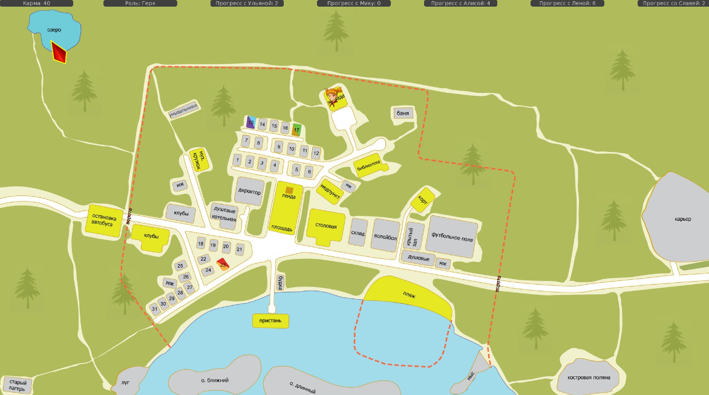
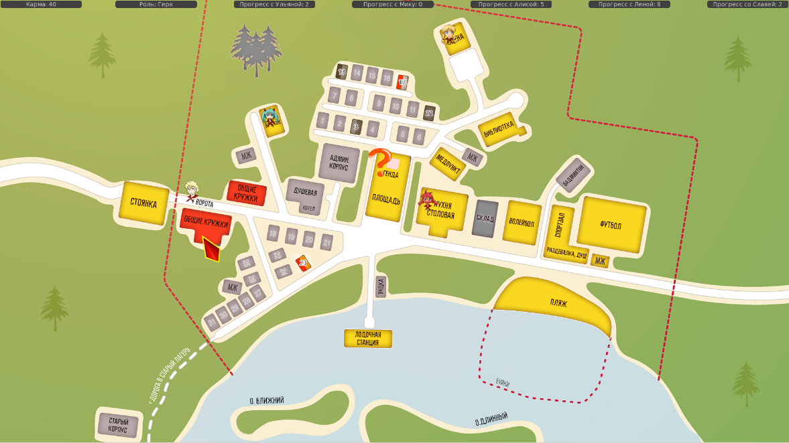

7дл-картооснова, разработка
Страница 3 из 5 •  1, 2, 3, 4, 5
1, 2, 3, 4, 5
Re: 7дл-картооснова, разработка
автор openplace в Чт 16 Июл 2015 - 23:08

openplace- Хикка

- Сообщения : 111
Дата регистрации : 2015-05-02
Re: 7дл-картооснова, разработка
автор nuttyprof в Пт 17 Июл 2015 - 12:50
Пофикшены неработающие сохранения на новых картах.
После установки фикспакета старые сохранения не будут работать точно, игру проходим с самого начала.
Фикспакет к вот этой выкладке
брать тут: https://yadi.sk/d/SQULl_kjhvDnb
- В архиве:
В архиве три файла, копируем их с перезаписью в папку scenario_alt.
Изменения небольшие: инициализация зон карт должна проводиться только один раз, при запуске мода,
поэтому инициализация зон карт перенесена из блока Init под метку запуска мода.
UPD. Проверил пару посторонних модов - туда подтягивается "классическая" карта; даже недописанный мод от лица Алисы ожил (до этого ругался на какой-то отсутствующий ключ в зонах карты)

nuttyprof- Хикка
- Сообщения : 102
Дата регистрации : 2015-05-25
Возраст : 45
Откуда : Юг
Re: 7дл-картооснова, разработка
автор openplace в Пт 17 Июл 2015 - 22:47
Результаты сегодняшних тестов таковы: новая карта действительно не конфликтует ни с классикой, ни с модами:
- Возвращение в Совёнок, Лена-рут, день 2:

- классика, день 2:

- Второй шанс, Лена-рут, день 2:

По картам в 7ДЛ: выправил координаты в малой карте, а то там наблюдалось почти что наложение зон. В частности, при попытке выбрать домик вожатой засвечивался и домик Лены с Мику. Впрочем, на события это не влияло. Ну и ещё кое-чего по мелочи было. Исправленная версия малой карты здесь: https://yadi.sk/d/vGNMLG0PhvtwW
Большая карта работает, но локации удалось выбрать не все:
- 7дл, день 2, вечер:

openplace- Хикка
- Сообщения : 111
Дата регистрации : 2015-05-02
Re: 7дл-картооснова, разработка
автор nuttyprof в Пт 17 Июл 2015 - 23:43
- Могу, конечно, ошибаться:
но элементы карты располагаются на разных слоях:
1) снизу основа;
2) выше - локации, которые суть графические кнопки; у них предусмотрено два изображения: одно показывается по умолчанию, второе - если на зону наведен курсор мыша. Изображения "режет" функция класса Map из графических файлов (которые _avaliable и _selected) по "разметке", которая указана в описании зон карты. Если кнопку сделать видимой (командой set_zone()) - она выводится на свой слой - в зону, описанную координатами. Поэтому важно совпадение всех трех карт в комплекте - иначе могут не совпадать линии на карте и кнопках;
3) еще выше - чибики, которые привязываются верхним левым углом своего "прямоугольника" к верхнему левому углу прямоугольника зоны (это точно, привязка в коде). Чибики тоже суть графические кнопки.
И если изображение чибика больше прямоугольника зоны - он ее перекроет.
Если чибик не попал в закрашенную локацию - значит, зона локации "вырезана" больше, чем надо.
По определению в коде эти кнопки (чибики) тоже кликабельны и "возвращают" ключ зоны, для которой определены - так что можно жать прямо на них.
Я "вскрывал" все зоны, нажимая как раз на чибика.
nuttyprof- Хикка
- Сообщения : 102
Дата регистрации : 2015-05-25
Возраст : 45
Откуда : Юг
Re: 7дл-картооснова, разработка
автор openplace в Сб 18 Июл 2015 - 0:04
Попробовал ещё раз. Всё верно: те зоны, которые малы, открываются по щелчку на чибик. Как, впрочем, и остальные, куда посажены чибики. Значит, по этому пункту - ложная тревога.nuttyprof пишет:Добрый вечер.
- Могу, конечно, ошибаться:
но элементы карты располагаются на разных слоях:
1) снизу основа;
2) выше - локации, которые суть графические кнопки; у них предусмотрено два изображения: одно показывается по умолчанию, второе - если на зону наведен курсор мыша. Изображения "режет" функция класса Map из графических файлов (которые _avaliable и _selected) по "разметке", которая указана в описании зон карты. Если кнопку сделать видимой (командой set_zone()) - она выводится на свой слой - в зону, описанную координатами. Поэтому важно совпадение всех трех карт в комплекте - иначе могут не совпадать линии на карте и кнопках;
3) еще выше - чибики, которые привязываются к верхнему левому углу прямоугольника зоны (это точно, привязка в коде). Чибики тоже суть графические кнопки.
И если изображение чибика больше прямоугольника зоны - он ее перекроет.
По коду эти кнопки (чибики) тоже кликабельны и "возвращают" ключ зоны, для которой определены - так что можно жать прямо на них.
Я "вскрывал" все зоны, нажимая как раз на чибика.
- по всему остальному:
- Дело с картой обстоит именно так, да. Карта содержит три картинки: базовая (bg), avaliable и selected. По умолчанию показывается базовая. Задавая координаты, мы формируем графические кнопки, через которые будет показываться avaliable и selected. Что именно будет показываться - задаётся set_zone, да.
Когда задано то, что будет показываться, то мы, дойдя до того момента, где в коде написано set_zone, видим в игре на экране сочетание bg (базового слоя) и avaliable: что-то осталось серым, а что-то загорелось жёлтым. Наводя курсор мыши на локацию, светящуюся жёлтым, мы тем самым активируем графическую кнопку, заставляя показываться selected и светиться локацию красным. Как только кнопка нажата - начинает происходить событие, написанное под данную конкретную локацию в данном конкретном дне.
Совпадение всех трёх карт в комплекте действительно важно, иначе будут искажения. Впрочем, они видны и на последнем скрине. Не случайно требуемый размер всех трёх картинок - 1920х1080 и крайне желательно расположение всех объектов на всех картинках карты в одних и тех же местах.
Впрочем, графика - это наиболее легко поправимая часть карты. От искажений можно избавиться. Заодно и надписи вместе с цветом леса поправлю.
От искажений можно избавиться. Заодно и надписи вместе с цветом леса поправлю.
openplace- Хикка
- Сообщения : 111
Дата регистрации : 2015-05-02
Re: 7дл-картооснова, разработка
автор openplace в Пн 20 Июл 2015 - 2:06
https://yadi.sk/d/KaUqKkIwhxUFq - архив с тремя частями большой карты и координатами малой.
https://yadi.sk/d/C0Kki5DjhxUGi - редактируемый исходник.
openplace- Хикка
- Сообщения : 111
Дата регистрации : 2015-05-02
Re: 7дл-картооснова, разработка
автор openplace в Пн 20 Июл 2015 - 2:08
- чибики спойманы на моменте моргания и поэтому такие бледные:

openplace- Хикка
- Сообщения : 111
Дата регистрации : 2015-05-02
Re: 7дл-картооснова, разработка
автор nuttyprof в Пн 20 Июл 2015 - 13:34
- Кусок кода есть в media.rpy:
Строки 462..465- Код:
init -997 python:
def bg_tmp_image(bgname):
renpy.image("text "+bgname,LiveComposite((config.screen_width, config.screen_height),(0, 0),"#ffff7f",(50, 150),Text(u"А здесь будет фон про "+bgname, size=40, color="6A7183")))
return "text "+bgname
в описаниях альтернативных карт я ее не переопределял, покопаю насчет возможных подводных камней
nuttyprof- Хикка
- Сообщения : 102
Дата регистрации : 2015-05-25
Возраст : 45
Откуда : Юг
Re: 7дл-картооснова, разработка
автор openplace в Пн 20 Июл 2015 - 15:49
Попробую пока повставлять малую карту в руты и третий день вместо той, что по умолчанию.
- Спойлер:
- Была мысль попробовать встроить большую карту в Лена-7дл-рут, в 6-й день, по типу того, как это сделано с малой картой в Мику-диджей-руте в 5-м дне. Это стало бы главной проверкой.
openplace- Хикка
- Сообщения : 111
Дата регистрации : 2015-05-02
Re: 7дл-картооснова, разработка
автор openplace в Пн 20 Июл 2015 - 20:08
- по карте лены-7дл, 6 день:
- Код:
label alt_day6_un_7dl_mapprepare:
window hide
$ alt_chapter(6, u"Лена. 7ДЛ. В поисках Лены!")
$ day_time()
$ persistent.sprite_time = "day"
$ disable_all_zones_alt2()
$ disable_all_chibi_alt2()
$ set_zone_alt2('un_mi_house_alt2', 'alt_day6_un_7dl_un_mi_house')
$ set_chibi_alt2('un_mi_house_alt2', '?')
$ set_zone_alt2('library_alt2', 'alt_day6_un_7dl_library')
$ set_chibi_alt2('library_alt2', '?')
$ set_zone_alt2('sandpit_alt2, 'alt_day6_un_7dl_sandpit')
$ set_chibi_alt2('sandpit_alt2', '?')
$ set_zone_alt2('dv_us_house_alt2', 'alt_day6_un_7dl_dv_us_house')
$ set_chibi_alt2('dv_us_house_alt2', '?')
$ set_zone_alt2('estrade_alt2', 'alt_day6_un_7dl_estrade')
$ set_chibi_alt2('estrade_alt2', '?')
$ set_zone_alt2('music_club_alt2', 'alt_day6_un_7dl_estrade')
$ set_chibi_alt2('music_club_alt2', '?')
jump alt_day6_un_7dl_map
label alt_day6_un_7dl_map:
scene black with fade
openplace- Хикка
- Сообщения : 111
Дата регистрации : 2015-05-02
Re: 7дл-картооснова, разработка
автор openplace в Ср 22 Июл 2015 - 23:22
А вообще, в средне- и долгосрочной перспективе при правильном понимании и использовании заложенные принципы можно использовать для создания модов БЛ с оригинальными картами событий, нисколько не связанными с классикой. И это более чем важно.
Со своей стороны, тем временем, завершил внедрение новых карт в дни и руты, где эти карты вызывались кодом. Естественно, всё пока для БЛ 1.1, ибо на нём же и прогонялось. Ссылки для попробовать:
https://yadi.sk/d/-t0MAAgfi32xH - архив мода, версия 0.19h+hf2, с новым механизмом появления и работы карт.
https://yadi.sk/d/8op-qnpgi33RP - полноценная рабочая сборка БЛ 1.1, 2,38 Гб. Большой размер объясняется не только наличием в сборке собственно игры, файлов модпака, 7ДЛ и "Истории Алёны", но и "Второго Шанса", "Возвращения в Совёнок" и "Пяти дней старого сценариста" (ABCB-mod). Классика, "Второй Шанс" и "Возвращение в Совёнок" использовались для тестирования на возможные несовместимости c 7ДЛ и оставлены для пробовать и играть. После исправления ошибок несовместимости исчезли.
Некоторые подробности (думаю, продублировать не будет лишним. Курсив в цитате мой (openplace).):
Также, как и говорилось ранее, внесены изменения в alt_day2.rpy, alt_day3.rpy, alt_dv_7dl_route.rpy, alt_mi_dj_route.rpy, alt_uv_route.rpy, но только там, где кодом вызывалась карта. Авторский текст не затрагивался.nuttyprof пишет:
Нужно из папки установленной игры удалить папку scenario_alt и на ее место записать ту, что в архиве. (или распаковать сборку в отдельное место на диске и играть. - openplace)
- Что в архиве:
Преамбула. В классике имеется собственная карта (та, которая с нарисованными чибиками); для классики (проверено) и для других модов (проверено. - openplace) будет использоваться именно она.
[...]
Для мода предлагается две карты:
т.н. "малая" - картинки с которой лежат в папке \scenario_alt\Pics\gui\maps (т.е. те, что используются в оригинальных авторских файлах мода - openplace);
и "большая" - с дополнительными зонами, картинки в папке \scenario_alt\Pics\gui\maps\7dl
[...]
Описания, вызовы и обработку чибиков не трогал, буде возникнет необходимость - можно реализовать аналогично.
Добавлены два новых файла с описанием карт, в них вроде бы собрал все, что к картам относится:
- alt_map7_small.rpy - для "малой" карты;
- alt_map7_small.rpy - для большой карты;
Изменены файлы:
- alt_res.rpy - закомментированы строки 145, 146 - источник изображений для подложки карты (определяется в файлах карт);
- alt_script.rpy - закомментированы строки 243..259 - источник изображений для карт и описание дополнительных зон (также определяется в файлах карт):
- возможно: в файле alt_script.rpy надо будет дополнительно закомментировать строки 222..232 - процедуру отключения чибиков (она также в файле карт).
[...]
Да, еще. Карты, определенные в моде, необходимо вызывать явно.
Для вызова и обработки "малой" карты к командам добавляется суффикс _alt1; для "большой" карты - _alt2.
Например:
- Код:
....
$ show_map() # "классическая" карта;
....
$ show_map_alt1() # "малая" карта;
....
$ show_map_alt2() # "большая" карта.
....
То же самое касается и "ключей" локаций :
- Код:
...
$ set_zone_alt1('beach_alt1', 'alt_day2_event_beach')
...
$ set_zone_alt2('beach_alt2', 'alt_day2_eventEv_beach')
...[...]
- день 2, вечер - "большая карта":
Наглядно:
- день 2, вечер:

- день 3, тихий час:

Приглашаю пробовать.
Архивы/сборки для 1.2 и стимоверсии будут позже.
openplace- Хикка
- Сообщения : 111
Дата регистрации : 2015-05-02
Re: 7дл-картооснова, разработка
автор nuttyprof в Чт 23 Июл 2015 - 0:35
По картам пока особых подводных камней не выявил, единственно - описания карт можно оптимизировать, код чуть короче будет.
- Спойлер:
- не создавать новый класс, а переопределить отличающиеся методы существующего mapklass'a; возможно - убрать неиспользуемые в моде функции (их определено с избытком, вероятно на перспективу) ну и еще по мелочи.
Завтра-послезавтра,сдам проект да и попробую лишнее выкинуть.
Вообще посмотрел по диагонали движок RenPy - заделок много по элементам интерфейса, много чего можно сделать (мини-игры, головоломки и т. п.)
Противоречий критических не выявлено пока.
Последний раз редактировалось: nuttyprof (Чт 23 Июл 2015 - 0:58), всего редактировалось 1 раз(а)
nuttyprof- Хикка
- Сообщения : 102
Дата регистрации : 2015-05-25
Возраст : 45
Откуда : Юг
Re: 7дл-картооснова, разработка
автор 7dl-kun в Чт 23 Июл 2015 - 0:50

7dl-kun- Находка для шпиона

- Сообщения : 3026
Дата регистрации : 2014-09-07
Откуда : здесь столько наркоманов?
Re: 7дл-картооснова, разработка
автор nuttyprof в Чт 23 Июл 2015 - 11:02
- Попытка собрать заметки по реализации карт в одном месте:
Все описано для "малой" карты alt_map7_small.rpy (_alt1), для других карт - все аналогично.
1. Карт (и картоподобных объектов) в моде может быть сколько угодно.
2. Для включения в мод новой оригинальной карты нужно:
- три картинки: а) "основа карты", б) "доступные для выбора зоны", в) "доступная для выбора зона, на которую наведен курсор";- На самом деле:
картинок может быть от одной ("основа карты") до четырех (четвертая - "затененная" карта), об этом будет ниже.
- файл описания карты с определением оригинальных зон и функций (сейчас реализовано путем добавления суффиксов _alt1, _alt2 )
- обязательно включить в код мода (в самое начало, но не в блоки init) вызов функции инициализации зон карты такого вида:- Код:
...
$ init_map_zones_alt1()
...
3. Старые сохранения работать не будут и придется начинать игру заново при:
- добавлении в мод новой карты;
- внесении изменений в описания координат зон в файле карты ( store.map_zones_alt1 ), добавлении новых зон и т. п.
4. В коде мода вызываем нужную карту ее командами:
Список доступных команд (в моде используются не все) :- Код:
- disable_all_zones_alt1(): # отключение ВСЕХ зон на карте (при этом флаги been_there_alt1() ) устанавливаются в 0 для всех зон;
- enable_all_zones_alt1(): # включение ВСЕХ зон на карте, (при этом флаги been_there_alt1() ) устанавливаются в 0 для всех зон;
- set_zone_alt1(name,label): # делает указанную зону доступной для выбора, "name" = из списка в "store.map_zones_alt1" ;
- reset_zone_alt1(name): # указанная зона становится недоступной, при этом флаг been_there_alt1() этой зоны устанавливается в 0;
- enable_empty_zone_alt1(name): # делает указанную зону доступной для выбора, но при клике по ней действий не будет (метка перехода не определена, (предположительно): - выдаст что-то вроде "тут ничего нет", "пусто" и т. п.);
- reset_current_zone_alt1(): # (предположительно): # после клика по данной зоне она станет доступной для выбора, но при дальнейших кликах по ней осмысленных действий производиться не будет (там, собственно, вызов enable_empty_zone_alt1(name) );
- disable_current_zone_alt1(): # после клика по данной зоне делает ее недоступной для выбора; при этом флаг been_there_alt1() этой зоны НЕ ОБНУЛЯЕТСЯ;
- been_there_alt1(): # возвращает количество "посещений" данной зоны (количество кликов на ней);
- set_chibi_alt1(name,ch): # устанавливает "сверху" данной зоны выбранного чибика;
- reset_chibi_alt1(name): # отключает чибика на данной зоне;
- show_map_alt1(): # вызывает на экран карту как виджет ; если мы хотим определить на карте некие доступные зоны (которые суть графические кнопки) - это нужно делать в коде до вызова данной функции;
- scene bg map_alt1 # выводит на слой бэкгроунда только картинку "основы" карты (реализовано в данный момент). При желании и наличии четвертой картинки "затененной" карты - можно показывать именно "затененную карту", путь к файлу которой нужно будет предварительно прописать в файле определения карты в строке
image bg map_alt1 = get_image_7dl("gui/maps/7dl_bg.jpg")
- init_map_zones_alt1(): # реализует доступные зоны нашей карты, вызывается обязательно один раз в начале выполнения кода нашего мода.
5. Чибики. Если мы сделали некоторую зону доступной и определили на ней чибика, он "привяжется" своим левым верхним углом к левому верхнему углу нашей зоны, "сверху" нее (слой чибиков выше слоя графических кнопок зон карты). Клик по чибику равнозначен клику по зоне (т. е. если зона маленькая по площади - "домики" включен чибик - можно смело кликать по чибику).
6. При желании можно реализовать набор оригинальных чибиков и подключать именно его.
7. "Перекрывающиеся" зоны.
- зоны карты, описанные в файле реализации карты в блоке store.map_zones_alt1 могут перекрываться как угодно;
- во избежание неоднозначности перекрытые зоны не рекомендуется делать одновременно доступными в блоках подготовки карт мода (например: label alt_day2_map_prepare:).
8. "Секртетные" зоны.
Можно определить любую зону на карте (на том участке, где "раскраска" всех трех файлов карты одинакова).
ВАЖНО: графические файлы карт должны быть абсолютно идентичны, иначе несовпадение контуров нашу "секретную зону" выдаст с потрохами.
Видно ее при показе карты не будет (изображения основы карты и обеих состояний графической кнопки зоны будут одинаковыми), но действия по клику на зоне выполняться будут.
Также на этой зоне можно включить чибика.
Вот тут возвращаемся к возможности использования одного графического файла - "основы" карты, доступные зоны на данной карте можно "обозначать" чибиками.
Последний раз редактировалось: nuttyprof (Чт 23 Июл 2015 - 13:22), всего редактировалось 2 раз(а)
nuttyprof- Хикка
- Сообщения : 102
Дата регистрации : 2015-05-25
Возраст : 45
Откуда : Юг
Re: 7дл-картооснова, разработка
автор 7dl-kun в Чт 23 Июл 2015 - 11:39
Для любого кладокопательского ивента или любых поисков может пригодиться. Вход в котокомбы под Гендой/пионерами у ворот, например. Да мало ли ещё способов применения "секретным" локациям. Надо только это обосновать сюжетно да пририсовать задник.
Не знаю, зачем это может пригодиться
А кодом не поделитесь ли, господа хорошие? Каким образом это выглядит, реализация такой "секретной" зоны?
7dl-kun- Находка для шпиона
- Сообщения : 3026
Дата регистрации : 2014-09-07
Откуда : здесь столько наркоманов?
Re: 7дл-картооснова, разработка
автор nuttyprof в Чт 23 Июл 2015 - 12:49
1. Используем мод или сборку, которые выложил openplace в этом сообщении
2. Скачиваем архив с двумя файлами тут: https://yadi.sk/d/YVXoI7hii3Tpd
3. Удаляем из папки scenario_alt файлы alt_day2.rpyc и alt_map7_big.rpyc (если они там есть);
4. Файлы alt_day2.rpy и alt_map7_big.rpy временно убираем куда-либо за пределы папки game (либо меняем им расширения на .txt)
5. В папку scenario_alt копируем файлы второго дня и описания "большой" карты с суффиксом _proba из скачанного архива.
6. Начинаем игру заново и добегаем до вечерних событий второго дня.
На карте:
- инициализированы практически все доступные зоны (на тестовых зонах установлены чибики).
- инициализированы "перекрытые" зоны - "клубы" - два здания (тут чибика нет) и "клуб кибернетиков" - одно здание;
- инициализирована одна "секретная" зона с подсказкой (вверху посередине карты елка с чибиком Ульянки).
- Реализация "секретных" зон:
в файле описания карт добавляем нужные нам зоны в блок store.map_zones_alt2 :- Код:
...
"secret_up_alt2": {"position":[855,20,953,148],"default_bg":bg_tmp_image(u"Секретная зона вверху")},
"secret_down_alt2": {"position":[1758,849,1886,1007],"default_bg":bg_tmp_image(u"Секретная зона внизу")}
...
Далее - в нужном месте кода включаем нужную нам зону:
С чибиком:- Код:
...
$ set_zone_alt2('secret_up_alt2', 'alt_day2_proba_18')
$ set_chibi_alt2('secret_up_alt2', 'us')
...
или без чибика:- Код:
...
$ set_zone_alt2('secret_down_alt2', 'alt_day2_proba_19')
...
Тестовые зоны - для проверки, можно не посещать.
"Перекрытые" зоны - работают, но возможна неоднозначность срабатывания.
Если посетить "секретную" зону вверху карты - появится еще одна секретная зона (недоступная до того).
чибика на ней уже не будет
- Подсказка:
зона появится в районе елки в нижнем правом углу карты
nuttyprof- Хикка
- Сообщения : 102
Дата регистрации : 2015-05-25
Возраст : 45
Откуда : Юг
Re: 7дл-картооснова, разработка
автор 7dl-kun в Чт 23 Июл 2015 - 17:19
7dl-kun- Находка для шпиона
- Сообщения : 3026
Дата регистрации : 2014-09-07
Откуда : здесь столько наркоманов?
Re: 7дл-картооснова, разработка
автор Arlien в Пт 24 Июл 2015 - 10:31
Arlien- Людовед

- Сообщения : 1322
Дата регистрации : 2014-09-08
Re: 7дл-картооснова, разработка
автор 7dl-kun в Пт 24 Июл 2015 - 10:38
7dl-kun- Находка для шпиона
- Сообщения : 3026
Дата регистрации : 2014-09-07
Откуда : здесь столько наркоманов?
Arlien- Людовед
- Сообщения : 1322
Дата регистрации : 2014-09-08
Re: 7дл-картооснова, разработка
автор 7dl-kun в Пт 24 Июл 2015 - 10:59
- Спойлер:

7dl-kun- Находка для шпиона
- Сообщения : 3026
Дата регистрации : 2014-09-07
Откуда : здесь столько наркоманов?
Re: 7дл-картооснова, разработка
автор peregarrett в Пт 24 Июл 2015 - 11:00
Тогда надо ее при первом походе как-то обозначить. А то сейчас по тексту не очевидно, что этот мыс где-то за пределами лагеря, даже наоборот - я всегда думал, что он примостился где-то между лодочной станцией и лагерным пляжем.Arlien пишет:Пиксель-хант, Ленарут, секретные локации... Едрить, а что если ленину тихую заводь сделать такой? Шоб без подсветки, без дураков - помнит игрок или нет?..
Сделать бродячих чибиков, как в ограблении дома Шурика? Хотя слишком явно.

peregarrett- Находка для шпиона
- Сообщения : 3264
Дата регистрации : 2014-09-07
Возраст : 36
Re: 7дл-картооснова, разработка
автор 7dl-kun в Пт 24 Июл 2015 - 11:02
7dl-kun- Находка для шпиона
- Сообщения : 3026
Дата регистрации : 2014-09-07
Откуда : здесь столько наркоманов?
Re: 7дл-картооснова, разработка
автор peregarrett в Пт 24 Июл 2015 - 11:17
- Код:
"Мы вышли к лодочной станции, но Лена, вместо того, чтобы зайти на мостки, взяла меня за руку и потащила куда-то влево по берегу."
"Там, метрах в трёхстах, начиналась небольшая рощица, будто отсечённая самым краем территории и выходом к воде."
"Получилась эдакая стрелка, в которой можно действительно спрятаться, и никто тебя не найдёт, если ты сам этого не захочешь."
Кстати, Славин дикий пляж тогда получается еще дальше мыса?
peregarrett- Находка для шпиона
- Сообщения : 3264
Дата регистрации : 2014-09-07
Возраст : 36
Re: 7дл-картооснова, разработка
автор 7dl-kun в Пт 24 Июл 2015 - 11:22
7dl-kun- Находка для шпиона
- Сообщения : 3026
Дата регистрации : 2014-09-07
Откуда : здесь столько наркоманов?
Страница 3 из 5 • 1, 2, 3, 4, 5